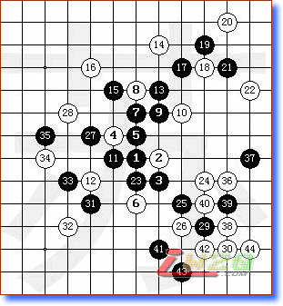

烦人的马步
首页
五子棋教室
#1 烦人的马步 作者：有志青年 发表时间：2007-9-2 13:03:50
马步防守在五子棋中如果利用的好可以做到固若金汤，但是代价是放弃了进攻的组织；获胜主要靠通过令人窒息的防守托跨对方的意志和耐性，从中渔利；下图就是实战中的一个案例：

图中，白方从一开始即展开马步防守，直到第36手才始进攻发起的标志，而且进攻号角的吹起始因为对方被马步拖跨了，在35手下出了超级疲软的一招就是明显标志，白方可以选择进攻点实施进攻，而起黑方受的打击还不只如此，对于白方的进攻也因为之前的急躁情绪判断出现了失误，使得白方的并没有多大威胁的进攻得逞；
对于马步防守也应该找找好的破解方案，我的个人经验一是心里上要沉着，因为马步防守是以放弃进攻为代价的，所以可以自己可以耐心组织一下进攻；第二破解马步就是选择对方的马步点结合自己的棋型先行占领，彻底打破环环相扣的马步链条；第三，对于无法破解的情况下，不要出现恶招，要静下心分析白方可能的进攻意图，防止对方反扑；
#2 Re:烦人的马步 作者：五子天下 发表时间：2008-3-19 11:20:18
恩 知道了
#3 Re:烦人的马步 作者：海湾浪琴 发表时间：2011-1-28 19:27:52
下了马步黑就不能连五
#4 Re:烦人的马步 作者：海湾浪琴 发表时间：2011-1-28 19:30:07
我有一局就被对方下马步下和的
#5 Re:烦人的马步 作者：岑小鱼 发表时间：2011-2-13 13:43:09
马步防御力确实强悍
同时也要发掘其做棋的能力 有些局面非它不可哈
#6 Re:烦人的马步 作者：蓝天蓝 发表时间：2011-2-13 17:06:16
马步的防守能力是很强的
#7 Re:烦人的马步 作者：与郎共五 发表时间：2011-2-13 21:46:50
马步防是强但不可迷信，往往最强防不是马步。
#8 Re:烦人的马步 作者：蓝天蓝 发表时间：2011-2-14 14:17:41
是的，马步防守是强，但是并不能说最强的防守就是马步
#9 Re:烦人的马步 作者：自来水 发表时间：2011-2-14 15:48:11
 花月啊...
花月啊...
#10 Re:烦人的马步 作者：醉卧春秋 发表时间：2011-3-8 15:06:20
 八卦阵啊 很容易就让人给破了 一破的话前面的就全散了
八卦阵啊 很容易就让人给破了 一破的话前面的就全散了
#11 Re:烦人的马步 作者：有机硅硅 发表时间：2011-3-12 18:21:39
对啊，我觉得遇到认识八卦的人很容易就破了。而且还会处于劣势。
#12 Re:烦人的马步 作者：董明 发表时间：2011-7-4 12:00:42
这盘棋黑5一跳出来就可以不至于这么折腾
#13 Re:烦人的马步 作者：隔世的风 发表时间：2011-7-4 12:15:04
记得最初接触八卦的时候，真当是头疼。